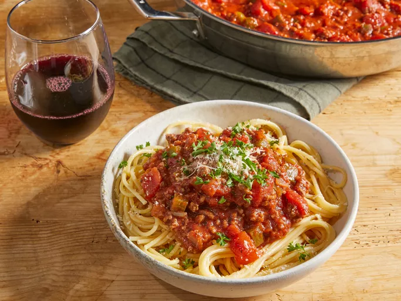

Spaghetti

Description
This is a quick and easy recipe for a delectable spaghetti dish, the ingredients are accounted for 8 servings.
Ingredients
- 400 grams ground beef
- 1 medium onion, chopped
- 4 cloves garlic, minced
- 800 grams diced tomatoes
- 300 grams tomato sauce
- 100 grams tomato paste
- 1 teaspoon salt
- 1/2 teaspoon ground black pepper
Steps
- Sauté the onions and garlics in olive oil until onions become transparent, should take no more than 5 minutes.
- Add the ground beef to the mixture, cook and stir until meat is browned and crumby.
- Add tomatoe sauce, paste and diced tomatoes to the pan. season with salt and black pepper. simmer on low heat, stirring occasionally until the sauce thickens to your liking, should take around an hour
- Preparing the spaghetti is very straightforward, heat the water until it comes to a boil, add alot of salt, making it real salty, like ocean water and then add your spaghetti to the pot. cook until it softens but not for too long, to determine whether they are ready, bite into one and if it's not crunchy but at the same time has an uncooked core at the middle (by having a different color) then you know it's ready.
- Have a delicious meal ~